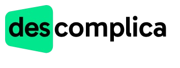

🚀 Minha Jornada de Cursos
Formação focada em tecnologia, inovação e resultados.
Inglês (2 anos)
Instituição: CNA
Comunicação avançada, leitura técnica e conversação para negócios.
Marketing Digital
Instituição: Plataforma Online
SEO, vendas, copywriting e estratégias digitais para resultados.

Programação Front-End
Instituição: Danki Code
HTML, CSS, JavaScript e React. Interfaces modernas e responsivas.
Programação Full Stack
Instituição: Infinity School
Python, JavaScript, MySQL, React. Projetos web, automação e IA.

Análise e Desenvolvimento de Sistemas
Instituição: Faculdade Descomplica
Formação superior em sistemas, infraestrutura e projetos.